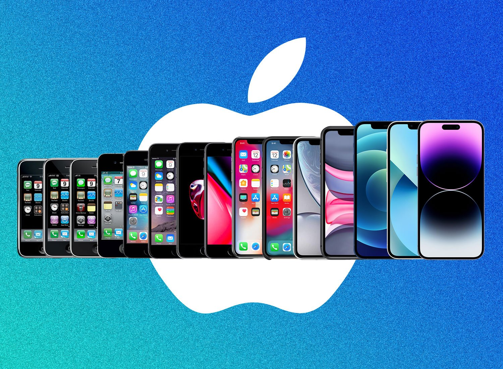
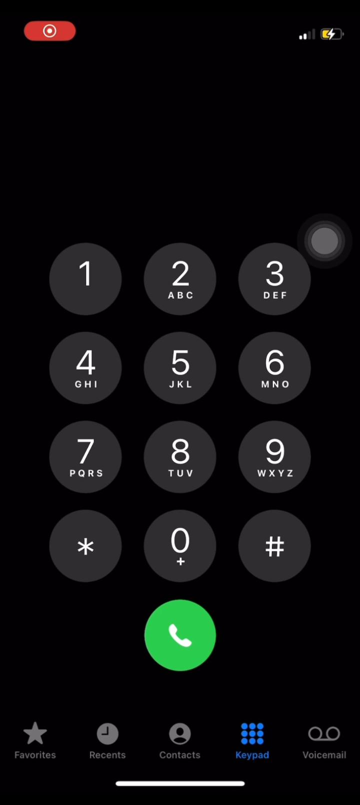
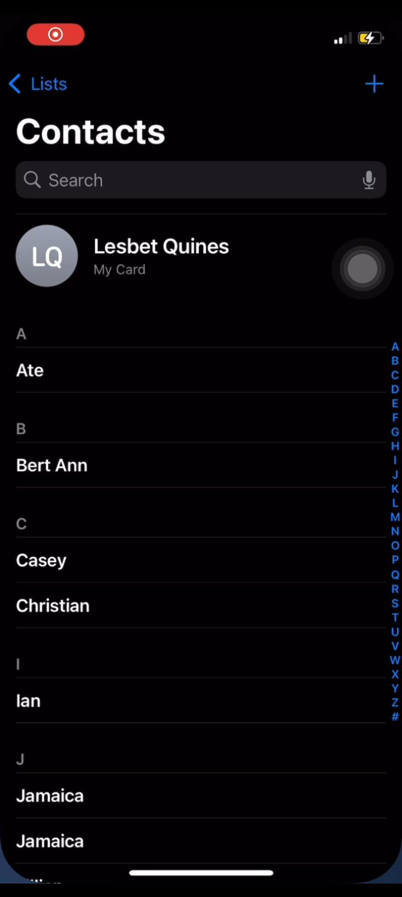
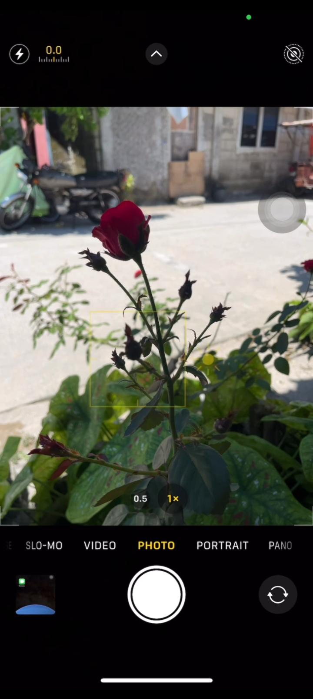

What do you want to do next?
"Anu it imo karuyag buhaton sunod?"
Information about app "Impormasyon hit applikasyon" Return
"Balik"
What is APPLE?
"Anu ba itun APPLE?"

The iPhone is a line of smartphones developed and marketed by Apple Inc. that run on iOS, Apple's mobile
operating system. It combines various technologies, including mobile telephone, digital camera, music
player, and personal computing capabilities. The first iPhone was announced by Steve Jobs on January 9,
2007, and has since evolved into a widely used device known for its user-friendly interface and advanced
features.
An iPhone amo an usa nga linya hin mga smartphone nga gin-develop ngan ginpapamaligya han Apple Inc.
nga
nagdadagan ha iOS, an mobile operating system han Apple. Ginkokombinar hini an iba-iba nga
teknolohiya
sugad han mobile nga telepono, digital nga kamera, music player, ngan personal nga computing nga
abilidad. An siyahan nga iPhone ginpahayag ni Steve Jobs han Enero 9, 2007, ngan tikang hadto
nag-uswag
ini ngadto ha usa nga hilapad an paggamit nga device nga kilala tungod han iya sayon-gamiton nga
interface ngan abanse nga mga features.
Different Applications
Iba-iba nga aplikasyon

This is the dial pad on the iPhone, where you can manually enter a phone number to call.
1. Open the Phone app.
2. Tap “Keypad.”
3. Enter the number.
4. Tap the green call button.
Ini an dial pad ha iPhone, kun diin pwede ka magbutang hin numero para tumawag.
1. Abrihi an Phone app.
2. Tapon an “Keypad.”
3. Isurat an numero.
4. Tapon an berde nga call button.
This is the Messages app on the iPhone, where we can see and manage the messages we send and
receive.
Ini an Messages app ha iPhone, kun diin makikita ngan maataman naton an mga mensahe nga ginpapadara
ngan ginbabaton.

How to add a contact on an iPhone?
1. Tap the “Contacts” app or open the Phone app and go to “Contacts.”
2. Tap the “+” button.
3. Enter the first name and last name.
Paonan-o pagdugang hin contact ha iPhone?
1. Tapon an “Contacts” app o abrihan an Phone app ngan adto ha “Contacts.”
2. Tapon an “+” nga buton.
3. Isurat an primero ngan apelyido nga ngaran.

This is the Camera app on the iPhone.
1. Open the Camera app.
2. Tap the shutter button to take a photo.
Ini an Camera app ha iPhone.
1. Abrihi an Camera app.
2. Tapon an shutter button para kumuha hin litrato.